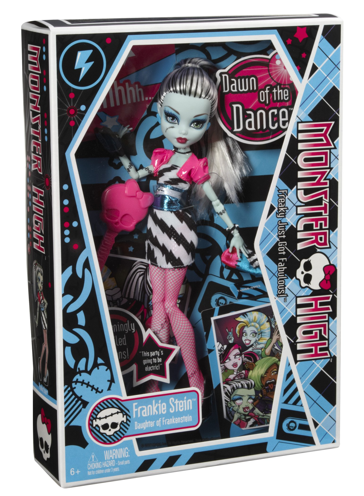

Estado del Proyecto
Este sitio web fue publicado exitosamente utilizando Vercel CLI.
Versión 1.0 (Borrador de Prueba)
Desplegado desde la terminal de VS Code
Este sitio web fue publicado exitosamente utilizando Vercel CLI.

La muñeca Frankie Stein de la colección Dawn of the Dance (Amanecer del Baile) de Monster High destaca por un look de fiesta electrizante en blanco y negro acompañado de detalles en color fucsia. Vestimenta y Apariencia
• Vestido: Un diseño corto sin mangas con patrón gráfico en blanco y negro.
• Chaqueta: Un bolero o chaqueta corta de color rosa fucsia intenso que contrasta con el vestido.
• Calzado y accesorios: Medias de rejilla de color rosa y tacones desparejos. Lleva un cinturón para marcar la figura, pendientes con forma de rayo y una gargantilla.
• Cabello: Su cabello bicolor característico (blanco con mechas negras) está peinado en una coleta alta tirante hacia atrás.
• Un bolso de mano con diseño de retazos.
• El teléfono móvil estilo atúdrico de la marca, conocido como iCoffin.
• Una invitación para el baile y fotografías exclusivas del personaje.